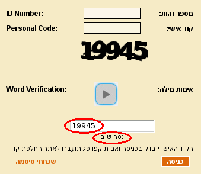
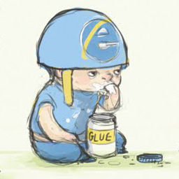

CAPTCHA במידע האישי

הכול מכירים את הדרישה לפענח תמונה המכילה מספרים בכניסה למידע־האישי של האוניברסיטה העברית ומבינים שמדובר בבזבוז זמן רב. זמן שאנו כסטודנטים היינו יכולים לנצל טוב יותר, נניח, להעתיק תרגילים.
מסיבות אלו נכתב תוסף זה שאוטומטית ממלא את שדה האימות בכניסה למידע האישי.
התוסף נכתב על ידי אוהד כהן ושלומי שעשע, עם מעט עזרה מ־עומר שכטר.
הוראות התקנה
-
1
הוראות ההתקנה הן לדפדפנים
שועל־האש
וכרום
בלבד. משתמשים בדפדפנים אחרים מוזמנים להתקדם אל המאה ה־21 ולהתחיל להשתמש בהם.
ראשית יש להתקין את התוסף Greasemonkey/Tampermonkey שיפעיל את התוסף שלנו על ידי בחירת האפשרות המסומנת מטה לפני מעבר לשלב הבא. זהו תוסף בטוח, נפוץ ושימושי:
-
Mozilla Firefox \ Iceweasel

-
Goolge Chrome \ Chromium
-
אחר

-
2
התקנת התוסף
-
3
כעת התוסף אמור לעבוד ותפוקתך כאדם תגדל.
דיווח על תקלות
אנא
דווח לנו
על כל תקלה.
Powered by the alternative system group.